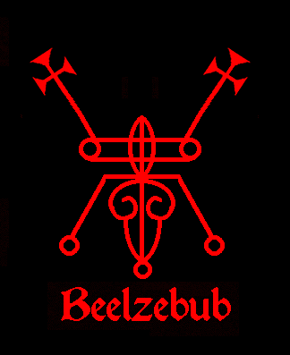
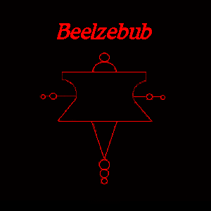
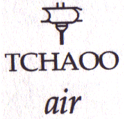
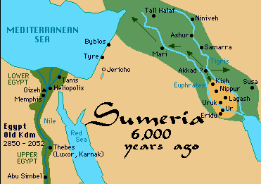
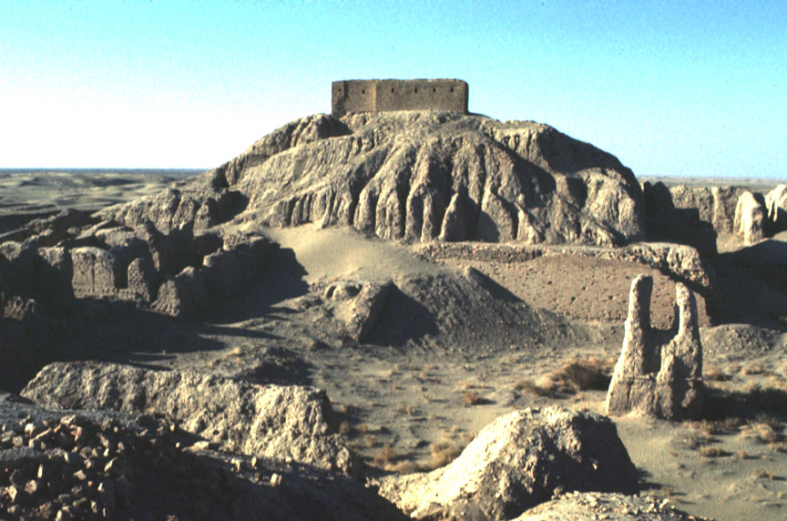
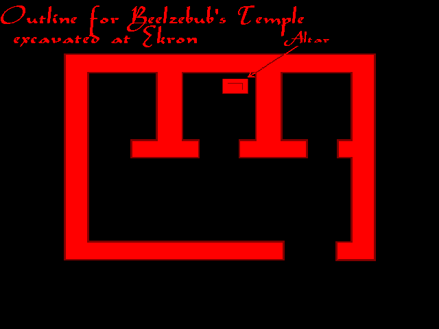

{kind=link}
{kind=link}

BEELZEBUB je také známý jako BAALZEBUB, ENLIL, BEL, "PIR BUB"* BAAL ZEBUL
a BEELZEBUTH
Je také známý jako goetický démon "BAEL"
Ti, kdo mají blízko k Belzebubovi, vědí, že je to Enlil. Tohle vím od něj osobně. Enlil byl původní "Bel", který se později vyvinul v "Baal". "Baal" znamená „Lord”, „Mistr“ „princ Baal“. Belzebub/Enlil byl velmi populární a známý bůh, po němž byla pojmenována města předponou "Baal" po celém Blízkém východě.
Většina lidí, kteří studovali okultismus, ví, že má velmi blízko k Satanovi a oba pamatují „počátky času“ zde na zemi; Enlil a Enki. Je Satanův nevlastní bratr. Spolu se svým bratrem Ea/Satanem a Astaroth skončil v grimoárech jako jeden z korunovaných princů pekla a byl označen jako „zlý“, stejně jako ostatní pohanští bohové.
„Baal Zebub, Bůh uzdravování z Ekronu, se později stal zkráceně Beelzebubem, který v novém zákoně Bible začal představovat zlo a modlářství.“
-Výňatek z - "Syria", Coleman South, 1995
Belzebub je známý především jako bůh Filištínů.
Vládl městu Ekrónu. Je druhým velitelem hned po Satanovi.
Staří Filištíni ho uctívali pod jménem
jménem „Baalzebub“. Belzebub je „pán nad vším, co létá“. Všude, kde byl uctíván, byl znám jako bůh počasí a meteorologie. Také ovládal
vzdušné cesty, když na Zemi přišli Nephilim. Jeho jméno bylo překrouceno Hebrejci do významu „Pán much“.
Belzebub se stará o vnitřní boje mezi oddanými satanisty. Satan chce jednotu a Belzebub ji prosazuje. Dokáže být velmi přísný, protože Satan neschvaluje, aby se oddaní satanisté navzájem proklínali.
Belzebub je patronem celého Orientu [Dálného východu], bojových umění a asijské kultury. Byl princem Serafínů a má chraplavý hlas.
Moje zkušenost - poprvé jsem ho viděla, když jsem požádal o jeho pomoc při tvorbě této webové stránky o něm. Zjevil se mi s platinově světlými vlasy a tmavším obočím, oblečený v bílém rouchu. To bylo poprvé, co jsem ho viděla. Jeho hlas jsem slyšela už dávno a byl chraplavý, ale když na mě nedávno promluvil, chraplavost zmizela. To je pravděpodobně proto, že je nyní volný.
- Velekněžka Maxine
Beelzebubovy sigily:
|  |  |
|  | Egyptský hieroglyf pro „vzduch“ a „vítr“ je velmi podobný jednomu z Belzebubových sigilů. Vývoj je zde zřejmý. Chci tím říct, že Belzebub je „princ vzduchu“. Považuji za odporné, jak nepřítel očerňuje naše bohy a tvrdí, že Belzebub je „Pán much“. Mnoho židovských psaných grimoárů obsahuje ilustrace ošklivých much pro Belzebuba, spolu s obludnými obrazy pro naše ostatní bohů. |
Spolu s židovským a křesťanským ničením antického vědění byly ztraceny téměř veškeré znalosti o Belzebubovi. Křesťané se mohli rouhat, hanobit a pomlouvat naše původní bohy, jakkoli se jim zachtělo. Protože po zničení měst, masovém vyvražďování „pohanů“ a jejich národů, ničení jejich chrámů, knihoven a záznamů, neměli nové generace jiné zdroje informací o těchto bozích než židovskou/křesťanskou bibli.
Beelzebub/Enlil, byl patronem Nippuru, města v Sumeru, který je
dnešním Irákem.

Belzebub měl ve svém městě Nippur zikkuraty, svatyně a chrámy. Níže jsou fotografie zbytků jeho chrámu. Pevnost na vrcholu mohyly postavili američtí vykopávači v 90. letech 19. století, „aby je ochránila před místními kmeny“. Pod ní se nachází Velký nippurský zikkurat a chrám Enlila:

Belzebub/Enlil je bůh bouří, atmosférických podmínek, větru, deště a vzdušného živlu. Je také bohem entomantie. Entomancie je metoda věštění pomocí výkladu chování hmyzu. Belzebub je také mistrem astrologie a zvěrokruhu.
Jeho číslem je číslo 50.
Jeho zikkurat v Nippuru se jmenoval "Fi-irn-bar-sag". Je bohem, který vrhá své blesky a hromy proti nepřátelům Satana. [Více než jedna křesťanská církev se občas setkala s katastrofou]. Je považován za milostivého Boha, který dává život a udržuje ho, a stará se o svůj lid, o hospodářská zvířata, nebeské ptactvo a mořské ryby. „Enlil [Belzebub] je zároveň bohem války i bohem míru; ničitel i ochránce, obránce, obnovitel, budovatel; nepřátelský i nejmilostivější.“ ¹
Abychom se mohli těšit z jeho požehnání, musíme vstoupit do správného vztahu se Satanem. Vykonává a prosazuje Satanova nařízení.
„Enlil [Belzebub] se nebojí ani nestojí v hrůze před nepřítelem. Bitvu vede s neutuchajícím zápalem, dokud není dovedena do vítězného konce - u něj neexistuje odpuštění ani možnost ústupu:
Nepřátelská či nepodřízená země - od té země se neotočíš.
Pokud se jeho
hněv jednou vzbudil, není nikdo, kdo by ho přiměl stáhnout se nebo uklidnit se.“ ²
Enlil/Belzebub byl „ochráncem a dárcem života“. „Jak zuřivý a ničivý Enlil dokáže být ve svém jednání s nepřáteli, tak milostivý, laskavý a milující je, když se jedná o jeho vlastní lid a zemi. Chrání svůj lid před nepřátelskými nájezdy tím, že je a jejich domovy obklopí vysokou zdí či tím, že se pro ně stává pevností nebo domem, jehož závory bezpečně upevňuje tak, aby je nepřátelské hordy nemohly ani přelézt, ani projít jeho branami.“
„Když jeho lid potřebuje déšť, otevře nebeské brány, stáhne jejich mříže, uvolňí jejich uzávěry, odstraňí jejich závory, aby mohly hojné deště zavlažit jejich pole; nebo to samé může udělat, aby utopil a zcela zničil nepřítele.“
Níže je uveden starověký sumerský hymnus na Enlila/Belzebuba:³
Brána(y) nebes
Nebeské mříže
Nebeské spony
Nebeské šrouby
Otevíráš
Stahuješ
Povoluješ
Odstraňuješ
„On udržuje život člověka i zvířete. Přitom nezanedbává ani toho nejmenšího a nejbezvýznamnějšího, kdo dává klíčit semenu“
Starověcí Babyloňané žasli nad Enlilovou laskavostí, ochranou a podporou a chválili ho zvoláním: „Ten, který chrání [dává podporu].“
Obdařen mimořádnými schopnostmi a autoritou. Symbolem jeho autority je čisté nebo jasné žezlo, které nosí nebo drží v rukou. Jedná na základě Satanovy autority. Toto jasné žezlo však není pouze emblémem autority, moci a síly, ale také perem v ruce Belzebuba, písaře, jímž zapisuje vůli a rozhodnutí Satana.
„Dvanáct znamení zvěrokruhu, rok, roční období, měsíce a znamení
zvěrokruhu mají každý svůj začátek a konec, své hranice nebo obrysy,
své obrazy nebo kresby: Enlil [Belzebub] je označuje a vyhlašuje.
Každé z nich a všechny mají svůj smysl a význam: Enlil [Belzebub]
je vykládá. Činí tak prostřednictvím „plnosti jeho projevů“. „Enlil a jeho sedm projevů“. Je to jedna z nejpozoruhodnějších skutečností, v souvislosti s povahou každého boha, který v té či oné době hrál roli
roli „syna“ v určité trojici, že takový bůh byl považován za boha, který má „sedm projevů“ své moci. „Sedm“ jich bylo, protože
toto číslo vyjadřuje „plnost, úplnost, celistvost“.“4
*Jedná se o čakry
Níže je schéma Belzebubova chrámu v Ekronu ve starověké Phylistii:

*Belzebub byl známý jako "Pir Bub" jezídským uctívačům ďábla v Iráku.
Tvrdí, že byl bohem krále Achaba. [Reference: Devil Worship, 1919,
Isya Joseph, strana 40]
Následující text je výňatkem z, “Encyclopaedia Biblica; a
Critical Dictionary of the Literary, Political and Religious History,
the Archaeology, Geography, and Natural History of the Bible"
Svazek I: A-D
Autor: Rev. T. K. Cheyne, M.A., DD
a
J. Sutherland Black, M.A. LL.D.
New York, The Macmillan Company; Londýn: Adam and Charles Black, 1899
„BAALZEBUB bere Zebub nebo Myla jako jméno Mušího boha, bůh z Ekrónu, jehož věštírnu žádal o radu Achazjáš, král izraelský, ve své poslední nemoci. Jméno se běžně vysvětluje jako „Pán much.“ Je pravda, že pro toto označení neexistuje žádná semitská analogie, ale Pausaniás vypráví o bohu, který zahnal nebezpečné roje much z Olympie, a Klement z Alexandrie dokládá kult téhož boha v Elis a my můžeme, chceme-li, vykládat titul „Bůh, který sesílá i odstraňuje morové rány much.“ Nechť podívejme se však dále. Bezold se domníval, že v Asyrském nápisu z 12. stol. př. n. l. "Baal-Zabnbi" bylo jméno Zebuba. Baal-Zebub bylo široce známé božské jméno, přijaté bohem Ekronu. Obnovení poslední slabiky je však přiznaně zcela nejisté a čtení Baal-Sapuna [viz BAAL-ZEFON, I] se zdá být mnohem pravděpodobnější. Winckler proto navrhuje, že by Zebub mohl být nějaký velmi starobylý název lokality v Ekronu [který již nelze vysvětlit etymologicky], a to na základě analogie Baal-Sidon, Baal-Hermon, Baal-Libanon. Ne taková lokalita však není známa a Ekrón, nikoliv nějaká lokalita v Ekronu, byl Baalovým územím. To proto je pravděpodobnější, že Baal-Zebub, „pán much“ [který se vyskytuje pouze ve velmi pozdním vyprávění, které má výraznou diktující tendenci], je pohrdavá neufónní židovská modifikace pravého jména, které pravděpodobně znělo Baal-Zebul, „Pán vznešeného domu“.“
„To je titul, jakým by se mohl honosit každý bůh s krásným chrámem a pravděpodobně se neomezoval pouze na Boha Ekrónu. „Vysoký dům“ by zároveň mohl označovat sídlo bohů, „hora shromáždění“ na vzdáleném severu. Je zde důvod se domnívat, že Féničané znali takovýto příbytek. Tato představa je naznačena v božském jménu Baal-Safon, „Pán severu“ [viz BAAL-ZEFON] a v Elegiích o králi Týru. [Ezechiel 28 ]; a Filištíni o něm pravděpodobně věděli. V každém případě pozdní hebrejský vypravěč, resp, chceme-li, raný písař, mohl mít odpor k použití takového titulu, jako je „pán vznešeného domu“ [který mu sugeroval buď Šalamounův chrám, nebo nebeský příbytek Jehovy, pro ekrónského boha, a změnil ho na „Pán much“, Baal-Zebub. Toto vysvětlení vrhá světlo na tři vlastní jména,- JEZEBEL, ZEBUL a ZEBULON, „z tvého [vznešeného] domu svatosti a slávy“. Stejný výraz by se mohl vztahovat i na sídlo Měsíce na obloze.“
Reference:
¹ Sumerian Hymns and Prayers to God Nin-Ib from the Temple Library of Nippur
Hugo Radau
Philadelphia Vydalo Oddělení archeologie Pensylvánské univerzity 1911; strana 21
² Tamtéž, strana 23
³ Tamtéž, strana 25
4 Tamtéž, strana 27
Zpět na Vysoce postavení bohové a korunovaní princové pekla
© Copyright 2004, Joy of Satan Ministries;
Library of Congress Number: 12-16457